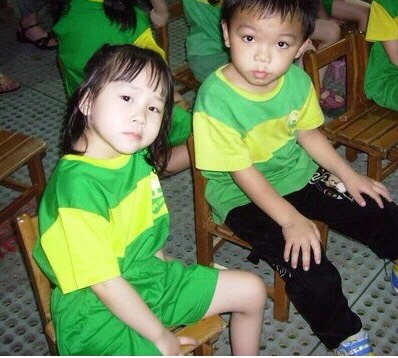

<<關於幼稚園>>

左邊的照片是我幼稚園時的樣子，左邊那個可愛的小女生就是我啦～真的不得不說從小我就很有當流氓的風範，那是什麼坐姿啦！！從這張照片就可以看的出來我小時候嬰兒肥真的超嚴重，那個肥肥的臉，OH MY GOD，不過還好現在有瘦下來啦，但是我小時候其實還蠻可愛的吧。
<<關於高中>>

右邊的照片是我高中時的樣子，為什麼直接跳來高中呢，因為小學和國中時很討厭拍照，所以根本找不到照片QQ，高中看起來明顯瘦了許多，因為呀，媽媽是上夜班基本上都不會煮晚餐，啊我這個人很懶，有時候下課回家不想出門買東西，就直接索性不吃晚餐，那時候瘦到只有三十幾公斤，不過我高中同學還是覺得我肉肉的，果然嬰兒肥這東西就是想遮也遮不住，那時我記得我最常說的一句話就是「我不是胖，只是瘦的不明顯」！
<<關於現在>>

左邊的照片是我目前的樣子，很多人都說我的照片看起來都超像流氓，我自己也不知道為什麼，但是我本人真的超溫柔、超好認識啦！上了大學之後，因為身邊的朋友都考到駕照，常常載著我出去吃好料，所以我又開始慢慢胖起來，可是我還是喜歡我高中瘦瘦的樣子。從小到大，在我身上唯一不變的應該只有我這嬌小的身高吧，雖然矮矮的身高也不錯，但有時候我會羨慕比我高的人，感覺上面的空氣比較新鮮好聞，而且還不會一直被朋友朝笑身高矮QQ。